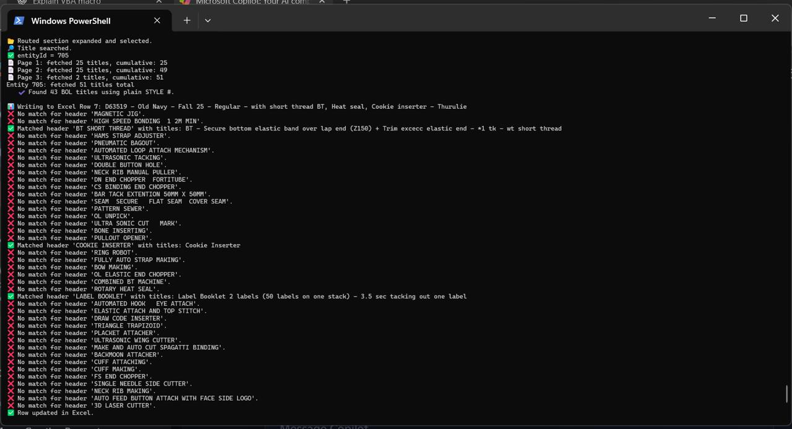
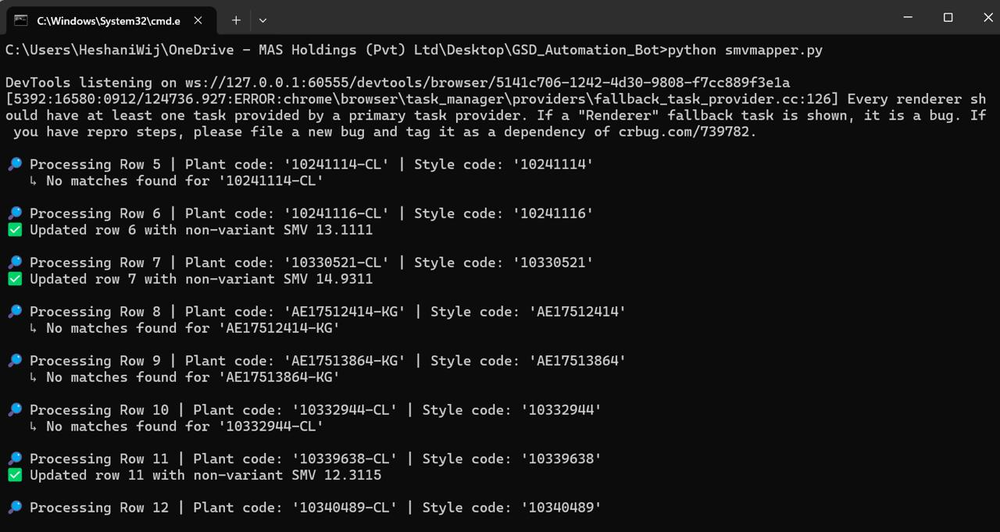

The Challenge
As production volumes grew, the SMV mapping process required significant manual effort — up to 30 days per cycle. There was a clear opportunity to automate this and free the team for higher-value analytical work.
The Solution
I developed a Selenium-based Python automation bot integrated with APIs that automated the entire mapping process end-to-end. The bot navigates the system, extracts data, maps values, and updates records automatically without any manual intervention.
The Impact
Mapping time reduced from 30 days to 5 days — an 83% reduction. This freed up the team to focus on higher-value analytical work and significantly improved production planning efficiency.

